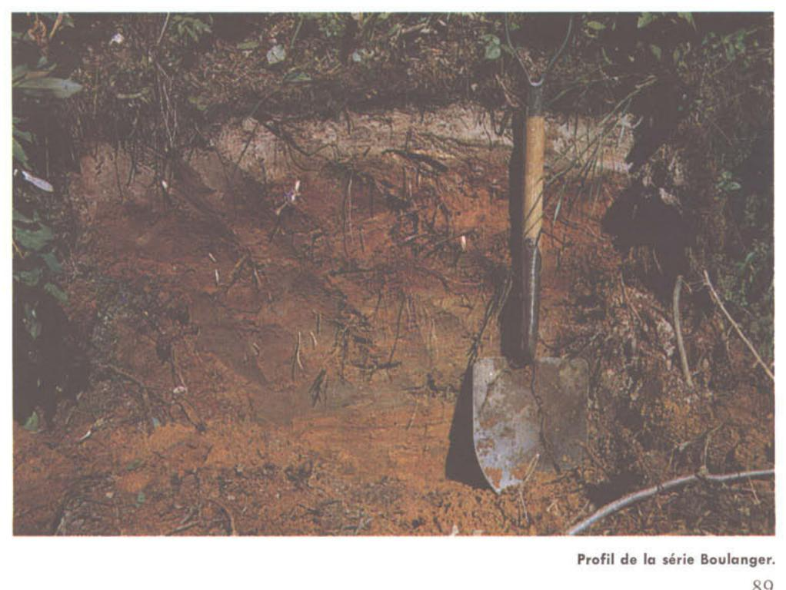

Identification & Caractéristiques Générales
La série Boulanger se développe sur des sédiments meubles d'origine minerogénique ou lacustre recouvrant les basses terres et les terrasses de la région de Chicoutimi. Le matériau parental est constitué d'une couverture meuble à texture grossière à moyenne, principalement des sédiments sablo-limoneux ou des dépôts éoliens et lacustres remaniés. La topographie associée à cette série se caractérise par des modelés de plaine subhorizontaux à légèrement déprimés, induisant des conditions de escarpement et de pente très faibles qui influencent directement le bilan hydrique de surface.
Morphologiquement, le profil pédologique présente une texture dominante de loam sableux à sable fin, s'inscrivant dans la dynamique évolutive des podzols sous une régie climatique boréale à subboréale. Le drainage naturel est jugé imparfait, en raison d'une position topographique basse et d'une perméabilité modérée à rapide en surface, souvent limitée en profondeur par une nappe phréatique temporairement perchée ou des strates de transition plus compactes. La réaction du sol est fortement à moyennement acide, et la pierrosité est généralement faible à nulle dans le solum, bien que la surface soit particulièrement susceptible à l'érosion éolienne en période de dénudation.
Sur le plan agronomique, les sols de la série Boulanger conviennent à la production de cultures fourragères et de certaines grandes cultures, sous réserve de la mise en place d'aménagements appropriés. La limitation majeure réside dans le drainage imparfait et le risque d'érosion éolienne des couches sablo-limoneuses de surface. L'installation d'un réseau de drainage souterrain et l'application de pratiques culturales de conservation, telles que le semis direct ou le maintien de résidus de cultures, sont requises pour optimiser la portance et la structure du sol. Un chaulage régulier est également nécessaire pour corriger l'acidité naturelle et maximiser la valorisation des fertilisants.
Caractères Distinctifs & Morphologie Génétique (Comté de Chicoutimi — Page 73)
- Topographie : subhorizontale à légèrement dépriméeDrainage : imparfaitGrand-groupe génétique : podzolDegré d'érosion : susceptible par le vent (D1)Classe d'utilisation : 3 (4)Association géographique : séries Dolbeau, Vauvert Proulx, DuclosVégétation naturelle : trembles, épinettes, saules; bleuets, solidago, kalmia, etc.
Classification Taxonomique & Environnement Pédologique
| Ordre Pédologique | Podzolique |
|---|---|
| Grand Groupe (SCSS) | Podzol humo-ferrique |
| Sous-Groupe Taxonomique | Podzol humo-ferrique gleyifié |
| Famille Pédologique | Limoneuse-grossière, mixte sableux, acide |
| Mode de Dépôt Parental | Fluvio-lacustre |
| Classe de Drainage Naturel | Imparfaitement drainé |
| Régime Thermique & Humidité | Frais / Perhumide |
Description Morphologique du Profil Type
Séquences génétiques des horizons pédologiques caractérisant le profil type représentatif de la série Boulanger :
Profil forestier / boisé — Comté de Chicoutimi
✓ Source : Comté de Chicoutimi — Page 73Couleur Munsell : 7.5R 2/0
Structure & Consistance : Polyédrique à granulaire
Description morphologique : Matière organique fibro-limoneuse très noire (7.5R 2/0); pH: 6.6.
Couleur Munsell : 7.5YR 7/2
Structure & Consistance : Polyédrique à granulaire
Description morphologique : Loam sableux fin gris rose (7.5YR 7/2); horizon irrégulier, sporadique; pH: 4.9.
Couleur Munsell : 2.5YR 2/4, 2.5YR 3/6
Structure & Consistance : Polyédrique à granulaire
Description morphologique : Sable limoneux à loam sableux brun rouge foncé (2.5YR 2/4) à rouge foncé (2.5YR 3/6); cette couche est étroite et sinueuse; pH: 5.3.
Couleur Munsell : 10YR 5/8, 5YR 5/8
Structure & Consistance : Polyédrique à granulaire
Description morphologique : Loam sableux brun jaune (10YR 5/8) avec taches rouge jaune (5YR 5/8); pH: 5.0.
Couleur Munsell : 10YR 6/3, 10YR 6/6, 2.5YR 3/6
Structure & Consistance : Polyédrique à granulaire
Description morphologique : Loam sableux brun pâle (10YR 6/3) avec taches jaune brun (10YR 6/6) à rouge foncé (2.5YR 3/6); pH: 5.0.
Couleur Munsell : 2.5Y 6/2, 2.5YR 3/6, 5YR 5/8
Structure & Consistance : Polyédrique à granulaire
Description morphologique : Loam sableux fin gris brun clair (2.5Y 6/2) avec bariolures allant du rouge foncé (2.5YR 3/6) à rouge jaune (5YR 5/8); pH: 5.2.
Profil représentatif — Pédologie de la région du Lac-Sa
✓ Source : Pédologie de la région du Lac-Sa — Page 89Couleur Munsell : Non précisée
Structure & Consistance : Polyédrique à granulaire
Description morphologique : Litière de feuilles, de brindilles et de mousses; pH: 4.2.
Couleur Munsell : Non précisée
Structure & Consistance : Polyédrique à granulaire
Description morphologique : Matière organique peu décomposée; fibreuse.
Couleur Munsell : 7.5YR 7/2
Structure & Consistance : Polyédrique à granulaire
Description morphologique : Loam limoneux gris-rose (7.5YR 7/2); pH: 4.7.
Couleur Munsell : 10YR 5/8, 5YR 4/4
Structure & Consistance : Polyédrique à granulaire
Description morphologique : Loam sableux brun-jaune (10YR 5/8) avec taches brun-rouge (5YR 4/4); pH: 5.0.
Couleur Munsell : 10YR 6/3, 7.5YR 5/8
Structure & Consistance : Polyédrique à granulaire
Description morphologique : Loam limoneux brun pâle (10YR 6/3) avec taches brun vif (7.5YR 5/8); pH: 4.9.
Couleur Munsell : 10YR 5/1, 2.5YR 4/6, 10YR 5/8
Structure & Consistance : Polyédrique à granulaire
Description morphologique : Limon gris (10YR 5/1) avec grandes taches rouges (2.5YR 4/6) et brun-jaune (10YR 5/8); pH: 4.9.
Profils Photographiques & Planches de Terrain
Documents iconographiques, figures pédologiques et coupes de terrain documentées dans les mémoires d'inventaire pour de la série Boulanger :

Propriétés Physico-Chimiques & Analyses de Laboratoire
| Horizon | Prof. (pces/cm) | Sable % | Limon % | Argile % | pH | C % | N % | Ca éch. | Mg éch. | K éch. | H+ éch. | Bases tot. | C.E.C. (meq/100g) | Saturation % |
|---|---|---|---|---|---|---|---|---|---|---|---|---|---|---|
| L-H | 3-4/7.5-10 | — | — | — | 6.6 | 19.98 | 0.89 | 46.1 | 2.1 | 0.43 | 7.8 | 48.6 | 56.4 | 86.1 |
| Aegj | 1-2/2.5-5 | 42.8 | 52.4 | 4.8 | 4.9 | 1.70 | 0.08 | 1.8 | 0.2 | 0.08 | 6.3 | 2.1 | 8.4 | 25.0 |
| Bfhgj | 1-2/2.5-5 | 60.0 | 34.4 | 5.6 | 5.3 | 10.80 | 0.41 | 5.8 | 0.6 | 0.18 | 41.3 | 6.6 | 47.9 | 13.8 |
| Bfg1 | 6-8/15.3-20.3 | 44.0 | 51.2 | 4.8 | 5.0 | 1.55 | 0.07 | 0.2 | — | 0.08 | 7.0 | 0.3 | 7.3 | 4.1 |
| Bfg2 | 8/20.3 | 34.0 | 63.6 | 2.4 | 5.0 | 0.49 | 0.02 | 0.2 | — | 0.08 | 2.6 | 0.3 | 2.9 | 10.3 |
| C | à ±24/à ±61 | 20.0 | 77.6 | 2.4 | 5.2 | 0.33 | 0.02 | 0.1 | — | 0.08 | 1.8 | 0.2 | 2.0 | 10.0 |
Particularités Régionales, Phases & Variantes Pédologiques
Déclinaisons régionales, faciès texturaux, phases d'érosion ou de pierrosité et variantes cartographiées par étude pour de la série Boulanger :
| Étude Régionale | Symbole | Appellation / Phase / Variante | Différenciation avec la série type (Analyse pédologique) |
|---|---|---|---|
| Comté de Chicoutimi | B |
Boulanger loam sableux | Modalité modale de référence (type de base de la série). |
| Pédologie de la région du Lac-Saint-Jean | B |
Boulanger loam sableux | Conforme à la série type de référence (caractéristiques texturales et drainage identiques). |
Distribution Pédo-Paysagère & Représentativité Cartographique (Couverture PPS 2026)
- Dolbeau loam sableux (DBU) — co-occurrente dans 99 polygone(s)
- Vauvert loam sableux (VUV) — co-occurrente dans 54 polygone(s)
- Saint-Méthode sable (SIO) — co-occurrente dans 42 polygone(s)
Aptitudes Agronomiques, Hydropédologie & Conservation des Sols
Indicateurs Hydropédologiques & Vulnérabilité à l'Érosion (BDHP 2026)
Interprétation BDHP : Potentiel de ruissellement modérément faible. Infiltration modérée avec textures moyennes à modérément grossières.
Classement selon l'Inventaire des Terres du Canada (ITC / CLI) : Classe 2w.
- Potentiel agricole : Terroir adapté aux cultures régionales selon la texture dominante et la régie de drainage.
- Contraintes majeures : Imparfaitement drainé. Risque d'engorgement temporaire ou d'excès d'eau printanier.
- Gestion & Aménagement : Drainage souterrain ou superficiel préconisé sur les terres planes. Chaulage et apport organique régulier selon les bilans agronomiques.
- Cultures adaptées : Grandes cultures (maïs, soya, céréales), prairies fourragères et cultures maraîchères selon le contexte géomorphologique.